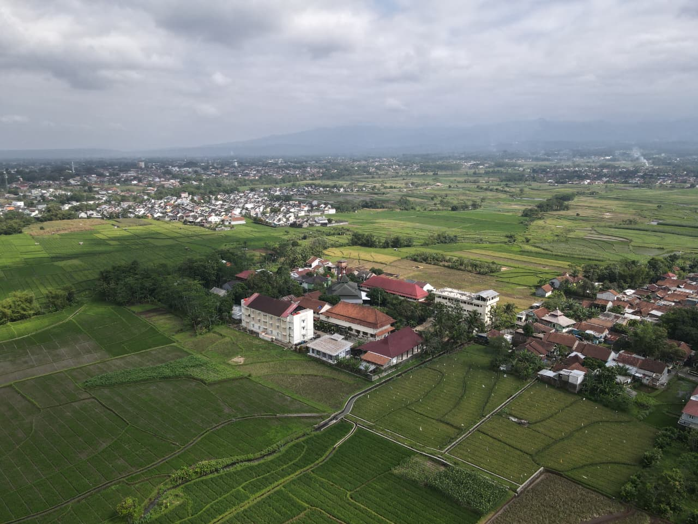

Tentang Darussalam
Purwokerto
Berdiri sejak tahun 2002, Pondok Pesantren Darussalam berkomitmen mencetak generasi Qur'ani yang berakhlak mulia, menguasai ilmu agama dan umum, serta siap menghadapi tantangan global.
- ✔ Memberikan pendidikan berbasis Al-Qur'an dan Sunnah
- ✔ Mengintegrasikan kurikulum salaf dan modern
- ✔ Membentuk karakter dan akhlak mulia
- ✔ Mempersiapkan generasi siap menghadapi tantangan global